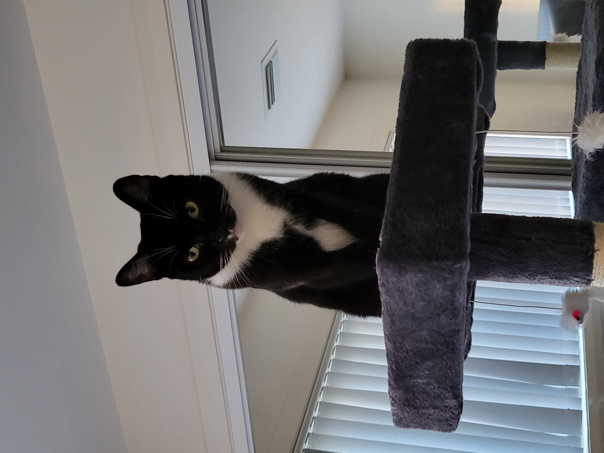

Hi there!
I'm Philip Mills!
Welcome to my site!
Currently living in Canberra, I am an eager and enthusiastic learner. Always looking for new opportunities to develop my skills in the work environment, after a long day you'll usually find me in front one of two things; my computer which stimulates my gaming itch, and my tablet where I'm currently exploring the world of Digital Art.
I am currently studying a diploma of Information Technology through Coder Academy, and I am eager to make connections within the industry after discovering a growing passion in game development. I've always enjoyed being a consumer of the video game industry, but there always felt like there was something missing; both at home and in the work environment. After reading through a few textbooks, I decided to partake on the journey into the Programming World, and I hope to develop my skills in coding and development and delve into the minds of other like-minded members of the community.
I'm a proud father of two nuisance cats, but I love them with all my heart all the same. If you see me drinking more coffee than usual, you'll always be able to blame the cats for waking me up too early.

You'll find everything you need to know about me on this site - a link to my resume can be found in the tabs above. If there is anything further that you would like to discuss with me, whether that be employment opportunities or otherwise, please feel free to get in contact with me and I'll respond as soon as I am able.
Blog Posts


Current Information & Employment Status
I am currently employed Full Time as a Bookkeeper at ACounting Edge, along with completing my Diploma on the side.
Coffees Consumed
I lost count...
Favourite Video Game
Tough one, but I'll go with... Overwatch 2 and The Sims 4
Employment Oppurtunities
Currently Open - Please contact me for further details
Professional Development Opportunities
Always Open - Broaden your mind!